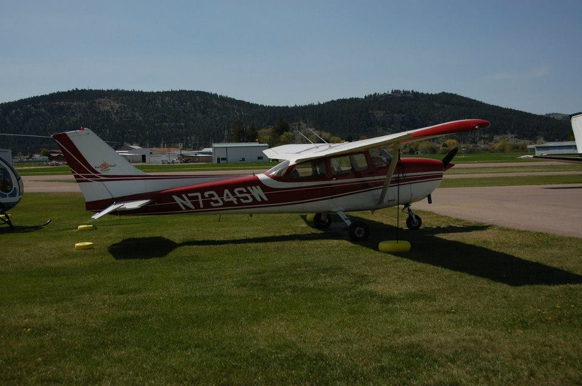

About Jeremy
Home
Maps
Contact
Education
University of Wisconsin-Madison, 2017 - 2018
Master of Science
Cartography/GIS (Development option)
South Dakota State University, 2013 - 2016
Bachelor of Science
GIS/Geography
Experience
Senior Consultant at Booz Allen Hamilton, 2016 - Present
Hired to serve as a Cartographer. The details of this position are classified.
UAV Owner and Operator, 2016 - Present
Experience flying DJI quadcopters. Currently own and operate a DJI Phantom 3. Uses include: observation, aerial photography, and aerial video. In possession of a current FAA unmanned aircraft systems certificate of registration. Experience with Pix4D – Drone Mapping Software.
FAA Licensed Airplane Pilot, 2014 - Present
Earned FAA Private Pilot License. Completed the ground school and flight training requirements. Managed to pass all the required exams on the first attempt. In possession of a current 3rd class medical certificate.
Skills
Python | Java | HTML | CSS | JavaScript | ArcGIS | QGIS | Mapbox | Leaflet | Illustrator | Photoshop | Google Earth | Google maps | SQL | PostgreSQL | MongoDB | Aviation
Places
From Kalispell, Montana
Completed flight training in this Cessna 172 out of the Kalispell City Airport.

Graduated from South Dakota State University (undergrad) in Brookings, South Dakota
Flew with the Garmin G1000 flight instrument system out of the Brookings Regional Airport while a student at SDSU.